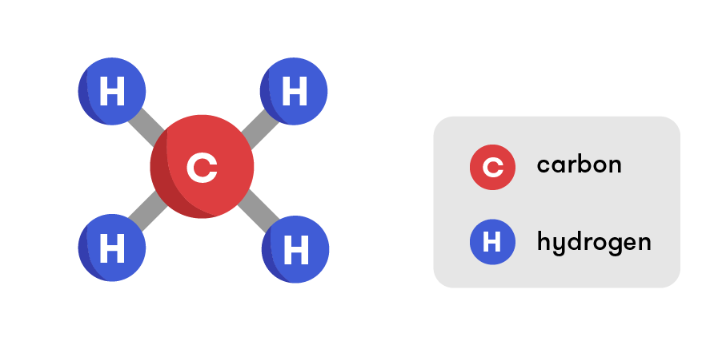
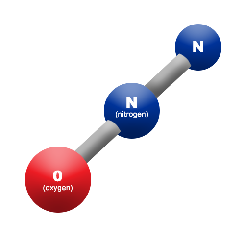
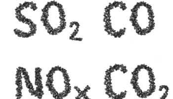

CO2 produced by human activities is the largest contributor to global warming. From the pre-industrial times (prior to 1750) till now, concentrated carbon levels in the atmosphere had risen by 48%. Burning coal, oil and gas forms CO2 releases CO2. Trees help absorb CO2, but that benefit is removed when we cut them down.

Methane has a shorter atmospheric lifetime than CO2, but it is much more powerful. Livestock such as cows or sheep produce large amounts of methane when food is digested.

Burning coal, oil and gas forms N2O which, like CO2, accumulates in the atmosphere for up to hundreds of years. Fertilisers containing nitrogen can also produce N2O emissions.

Fluorinated gases, or F-gases, are artifically created gases which stay in the atmosphere for centuries, contributing to global warming. The four F-gases are hydrofluorocarbons (HFCs), perfluorocarbons (PFCs), sulfur hexafluoride (SF6) and nitrogen trifluoride (NF3). These gases can be released from equipment and products that utilize these gases. These emissions have very strong warming effect, up to 23000 times greater than CO2.